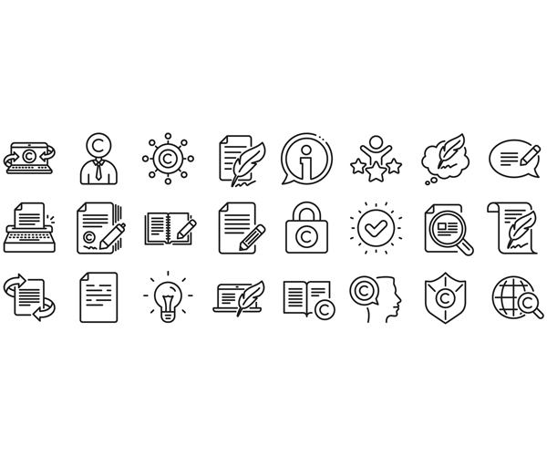

When requesting copyright clearance, you need to be specific about which materials and how they will be used. You should also indicate that you are contacting them because you believe they are the copyright holder. Select the headings below to learn more about copyright clearance letters and client copyright clearance documents.
Follow the link below to see an example of a copyright clearance letter for an online course.
If this is a physical letter, include the date and a return address.
Copyright clearance letter
Copyright clearance(this is an external link and opens in a new window)
After sending out the copyright clearance letters, be prepared to wait. Organisations that are copyright holders will sometimes take a long time to respond to copyright clearance requests. Individuals, with the exception of very prominent ones, will usually respond within a few days (sometimes it can be as short as few minutes by e-mail). Some copyright holders will, unfortunately, not respond. In those situations, it is best to find alternate resources. Do not take a lack of response as copyright clearance.
It is best practice in a business to document that copyright clearance has been obtained and that it is signed off by an appropriate person. This appropriate person in most ways will be the client, as it will be their resources once a web site has been developed and commissioned.
Prior to having the client sign the copyright clearance you will need to explain the process you have gone through and the copyright licence that applies to each and every asset. This would best be done in a document that can be saved as a template for future client use and sections removed that are not applicable.
The copyright clearance information can be easily presented using a table where the information would be as follows. Example based on the image at the top of this section.
|
Content to Source Asset filename |
Description Basic description of the asset |
Copyright Status Type of copyright licence, holders and licence location. |
|---|---|---|
| 1803348466.jpg | Set of 24 - vector format - assorted copyright protection icons (greyscale). |

|
To complete the document, you should also include a statement verifying that approval has been obtained from the client. The following information should be included: